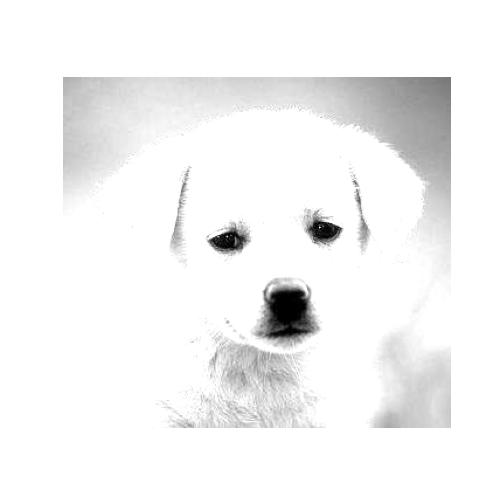
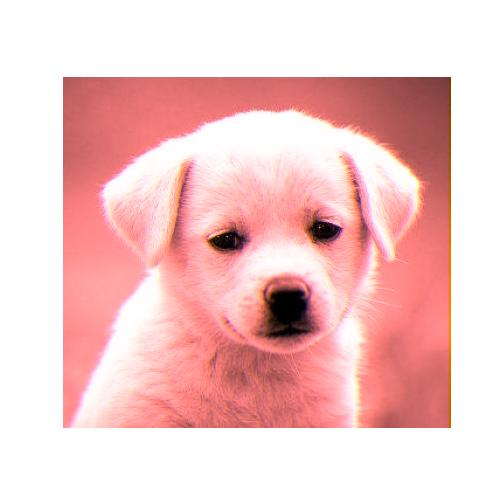
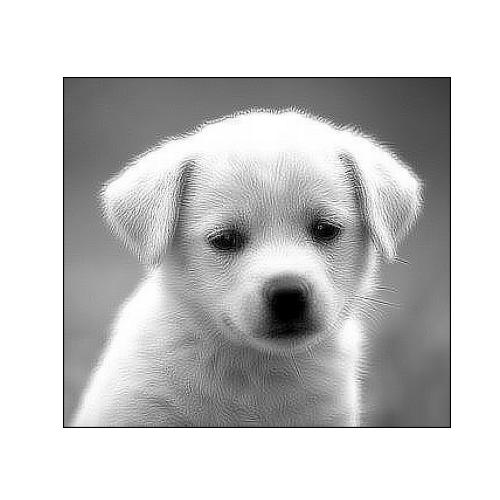
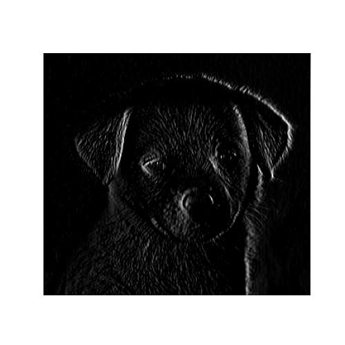
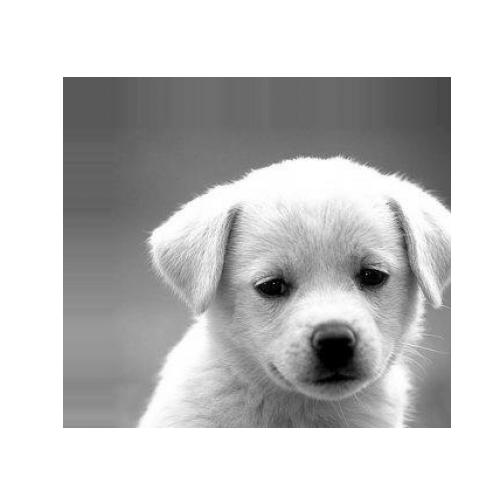

Filters
Exercise 1
- Take a look at the filters in the following code cell. What do you think they do? You may want to run display() on the filter to visualize it.
- Run the filters using naive_convolution_filter to verify your answer.
The first kernel sets the value of each pixel to the value of the pixel two pixels to the right of it, which effectively just shifts the entire image left by two pixels. Since our current implementation of convolution uses zero padding, this means we're going to have two columns of black pixels at the right side.
filter1 = np.array([
[0,0,0,0,0],
[0,0,0,0,0],
[0,0,0,0,1],
[0,0,0,0,0],
[0,0,0,0,0]
])
This is exactly like the identity filter we discussed in class, but it has a 2 instead of a 1, meaning it'll set the pixel to double its current value. This should thus produce an image that is twice as bright.
filter2 = np.array([
[0,0,0],
[0,2,0],
[0,0,0]
])

This filter is less obvious… it weights the value of the pixel it's setting highly but also compensates for that by negatively weighting the pixels surrounding it. So, things with darker surroundings (things near an edge?) should look brighter? Maybe some sort of emboss/sharpening?
# Hint: check the lecture slides for a familiar-looking filter filter3 = np.array([ [-.11,-.11,-.11], [-.11,1.88,-.11], [-.11,-.11,-.11], ])
Exercise 2
So far, we've only run the naive implementation on a grayscale image. Add a color image of your choice and run a filter on it, showing both the original image and the output of the filter.
As you can see, the filter runs on all three channels. Create an implementation that allows applying different filters to each channel, and submit the output of using at least two different filters on the same image.
def naive_convolution_filter_rgb(image, kernels): """ Args: image: numpy array of shape (Hi, Wi). kernels: Dictionary between channels (R, G, or B) and numpy arrays of various shapes Returns: out: numpy array of shape (Hi, Wi). """ out = np.zeros(image.shape) assert(len(kernels) < 3 and len(kernels) > 0) for image_row in range(image.shape[0]): for image_column in range(image.shape[1]): output_value = np.zeros(3) for i in range(3): chan = ["R", "G", "B"][i] if chan not in kernels: output_value[i] += image[image_row, image_column][i] continue kernel = kernels[chan] for kernel_row in range(kernel.shape[0]): for kernel_column in range(kernel.shape[1]): image_row_offset = math.ceil(kernel_row - kernel.shape[0] / 2) image_column_offset = math.ceil(kernel_column - kernel.shape[1] / 2) if (image_row + image_row_offset < 0 or image_row + image_row_offset >= image.shape[0] or image_column + image_column_offset < 0 or image_column + image_column_offset >= image.shape[1]): image_value = np.zeros(3) else: image_value = image[image_row + image_row_offset, image_column + image_column_offset] output_value[i] += image_value[i] * kernel[kernel_row, kernel_column] out[image_row, image_column] = output_value return out
The tweaks required to add RGB support for convolution are not super substantial: there's now an additional for loop to apply a different kernel depending on the channel or skip the convolution part entirely if the user doesn't supply a kernel for that channel.
for i in range(3): chan = ["R", "G", "B"][i] if chan not in kernels: output_value[i] += image[image_row, image_column][i] continue kernel = kernels[chan]
As a result of the ability to have a different kernel per color channel, the interface changed. Instead of passing in a NumPy array for the kernel, you now pass in a dictionary of kernels associated with color channels.
Finally, the update step now sets individual channels rather than the value of all three:
output_value[i] += image_value[i] * kernel[kernel_row, kernel_column]
Now let's try it:
display(naive_convolution_filter_rgb(image, {"R": filter2, "B": filter1}))

Exercise 3
Create your own filter(s) and describe their output.
One problem about the traditional all-ones blur filter is that it dramatically amplifies the brightness of the image, so the first filter I made was just one that was normalized so that the brightnesses would add up to 1 - preserving the brightness while still blurring the image.
blur_nicely = np.array([
[0.111, 0.111, 0.111],
[0.111, 0.111, 0.111],
[0.111, 0.111, 0.111]
])
After seeing the sharpness filter, and thinking more about the idea of a pixel's surroundings canceling it out, I made the following filter, which brightens dim pixels with bright surroundings and dims bright pixels with dark surroundings. I don't have a particular word for it, but it made interesting patterns that reminded me of some sort of frosted glass.
fil = np.array([
[0.5, 0.5, 0.5],
[0.5, -3, 0.5],
[0.5, 0.5, 0.5]
])

Continuing down the vein of pixel surroundings canceling things, I experimented with a filter where the surroundings would cancel out entirely for uniform pixel values. This filter brightens pixels with bright pixels to the left of it and dark pixels to the right, and vice versa. This creates a filter that brightens pixels with fast shifts in brightness (horizontally).
fil2 = np.array([
[1, 0, -1],
[1, 0, -1],
[1, 0, -1],
])

Advanced Exercise 2
You may have noticed that naive_convolutional_filter is quite slow. Create an implementation that is faster, using the time library to demonstrate the difference in performance. Your implementation must return the same output as the naive implementation.
An easy first step (and the most effective one!) is to include Numba, a python package for JIT compiling NumPy code.
import numba
Numba's interface is quite simple: just a simple decorator above your existing function (presuming it's compatible, which ours happens to be in this case!)
@numba.jit(nopython=True, nogil=True) def numba_convolution_filter(image, kernel): """ Args: image: numpy array of shape (Hi, Wi). kernel: numpy array of shape (Hk, Wk). Returns: out: numpy array of shape (Hi, Wi). """ out = np.zeros(image.shape) for image_row in range(image.shape[0]): for image_column in range(image.shape[1]): output_value = 0.0 for kernel_row in range(kernel.shape[0]): for kernel_column in range(kernel.shape[1]): image_row_offset = math.ceil(kernel_row - kernel.shape[0] / 2) image_column_offset = math.ceil(kernel_column - kernel.shape[1] / 2) if (image_row + image_row_offset < 0 or image_row + image_row_offset >= image.shape[0] or image_column + image_column_offset < 0 or image_column + image_column_offset >= image.shape[1]): image_value = 0.0 else: image_value = image[image_row + image_row_offset, image_column + image_column_offset] output_value += image_value * kernel[kernel_row, kernel_column] out[image_row, image_column] = output_value return out
This feels like cheating though, so let's do some optimization ourselves. Our convolution operation is essentially just doing a matrix multiplication between the kernel and different regions of the image and then summing across the result, so let's actually use a matrix multiply function.
def matrix_convolution_filter(image, kernel): """ Args: image: numpy array of shape (Hi, Wi). kernel: numpy array of shape (Hk, Wk). Returns: out: numpy array of shape (Hi, Wi). """ out = np.zeros(image.shape) rows, cols = image.shape[:2] # Preemptively pad the image image = np.pad(image, (math.floor(kernel.shape[0]/2), math.floor(kernel.shape[1]/2))) for image_row in range(rows): for image_column in range(cols): # Pull out the region of the image being processed by the kernel region = np.zeros((kernel.shape[0], kernel.shape[1])) for kernel_row in range(kernel.shape[0]): for kernel_column in range(kernel.shape[1]): region[kernel_row, kernel_column] = image[image_row+kernel_row, image_column+kernel_column] # Get the new pixel value by matmul and sum new = kernel * region out[image_row, image_column] = np.sum(new) return out
The function's also much more readable now! In fact, we could likely go even further and shorten the code for pulling out the region of the image by using some creative NumPy slicing.
We can also slap a @numba.jit(nopython=True, nogil=True) on top, too.
You might notice this implementation (and technically the previous, although it's pretty subtle since it's an artifact of how Numba adds types to my code) doesn't handle color images! This saves a bit of a headache with matrix math and other random implementation details, and I'm technically allowed to do it given the docstring of the provided convolution function:
""" Args: image: numpy array of shape (Hi, Wi). kernel: numpy array of shape (Hk, Wk). Returns: out: numpy array of shape (Hi, Wi). """
No color channel mentioned there!
Quickly benchmarking all four (with a separate numba matrix version) on a grayscaled version of this image gives us:
{kind=link}
naive: 6.442496061325073 numba naive: 0.29589176177978516 matrix: 4.418210744857788 numba matrix: 0.3837759494781494
Surprisingly, using Numba on the matrix based version did not yield as much of a performance increase as it on the naive function. I'm betting the manual filling of the region matrix is what's throwing it off.
Further Optimization Opportunities
There's a bunch of things I messed with that I ultimately didn't have time for:
taichiis a cool Numba-like library that goes one step further by GPU-accelerating your codepympmimics OpenMP APIs in python, which provides really simple drop-in parallelism for loopspyopenclwould let me write a convolution kernel in OpenCL and use that to speed up the convolution operations. Convolutions are a good fit for GPU programming since we can calculate the value for every pixel independently!
Advanced Exercise 1
Reverse order! This is mostly because I wanted to introduce NumPy first, as this part of the assignment would be a huge headache without it. To really test our boundary handling, let's define a much beefier shifting filter:
shift = np.zeros((81, 81)) shift[0, 0] = 1
This leads to a lot more math, so we're going to appreciate Numba saving us the waiting time that comes with it. Handling boundary conditions is as simple as pulling out the if-else spitting out the image value and replacing it with a generic function call:
if (image_row + image_row_offset < 0 or image_row + image_row_offset >= image.shape[0] or image_column + image_column_offset < 0 or image_column + image_column_offset >= image.shape[1]): image_value = 0 else: image_value = image[image_row + image_row_offset, image_column + image_column_offset]
becomes…
image_value = strategy(image, image_row, image_column, image_row_offset, image_column_offset)
This leads to a somewhat cleaner function:
@numba.jit(nopython=True) def boundary_convolution_filter(image, kernel, strategy=replicate): """ Args: image: numpy array of shape (Hi, Wi). kernel: numpy array of shape (Hk, Wk). strategy: Numba-accelerated (w/ nopython pipeline) function taking image, image_row, image_col, image_row_offset, image_col_offset and returning and returning a pixel value. Defaults to replicate(). Returns: out: numpy array of shape (Hi, Wi). """ out = np.zeros(image.shape) for image_row in range(image.shape[0]): for image_column in range(image.shape[1]): output_value = np.zeros(3) for kernel_row in range(kernel.shape[0]): for kernel_column in range(kernel.shape[1]): image_row_offset = math.ceil(kernel_row - kernel.shape[0] / 2) image_column_offset = math.ceil(kernel_column - kernel.shape[1] / 2) image_value = strategy(image, image_row, image_column, image_row_offset, image_column_offset) output_value += image_value * kernel[kernel_row, kernel_column] out[image_row, image_column] = output_value return out
We can then implement the replicate method, which entails repeating the values of pixels at the edge of the image for padding. We do this simply by replacing any potentially out-of-bounds rows/columns with the first/final rows/columns of the image.
@numba.jit(nopython=True) def replicate(image, image_row, image_column, image_row_offset, image_column_offset): row = min(image_row + image_row_offset, image.shape[0]) row = max(row, 0) col = min(image_column + image_column_offset, image.shape[1]) col = max(col, 0) return image[row, col]
Running this on our dog image with the aggressive diagonal shift filter gives us what we expect: the corners is solid (since it's replicating the one corner pixel) and the top and left parts are streaks since they continuously use the closest pixel in the source image.
